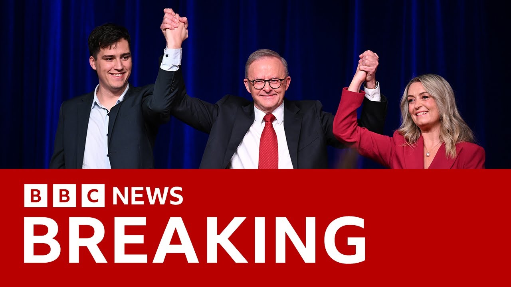

来B站一起耍【Global每日英语简报】
【澳大利亚总理安东尼·阿尔巴尼斯赢得连任，当地媒体预测 | BBC新闻】
Summary: Breaking news from Australia: The incumbent Labor Party, led by Prime Minister Anthony Albanese, has won the federal election, as projected by ABC News.
摘要： 来自澳大利亚的突发新闻：现任工党在总理安东尼·阿尔巴尼斯的领导下赢得联邦大选，澳大利亚广播公司（ABC）已预测这一结果。

⏱️ Estimated Reading Time: 8 min
Let's bring you some breaking news just into us from Australia.
我们为您带来来自澳大利亚的突发新闻。
Now the state broadcaster ABC News have been reporting that the incumbent Labor Party have certainly won power in a nationwide federal election.
国家广播公司ABC新闻报道称，现任工党已确定在全国联邦选举中获胜。
This means that the uh incumbent Labour Party with the Prime Minister Anthony Albanzy will be staying in power.
这意味着由总理安东尼·阿尔巴尼斯领导的现任工党将继续执政。
That news just into us from ABC.
这一消息刚刚由ABC发布。
the Australian state broadcaster projecting that the incumbent Labor Party have certainly won power in today's elections.
澳大利亚国家广播公司预测，现任工党已在今天的选举中确定获胜。
Let's go to my colleague Steve Lie who's following all the developments from Sydney.
让我们连线在悉尼跟进所有进展的同事史蒂夫·李。
Uh Steve, what more do we know?
史蒂夫，我们还了解到什么？
Yeah, this news coming in a lot sooner than we were expecting.
是的，这一消息比我们预期的要早得多。
ABC, the local news network here that typically calls elections are the ones that have announced this just a short while ago.
ABC是当地通常宣布选举结果的新闻网络，他们刚刚发布了这一消息。
And Anthony Green, the voice of Australian elections for the last 30 years.
安东尼·格林是过去30年澳大利亚选举的权威解说员。
This is his last election where he's calling the results and he has come out to say that he projects that Labour and Anthony Albanzy will be returning to government.
这是他最后一次宣布选举结果，他表示预测工党和安东尼·阿尔巴尼斯将重返政府。
Now we can get some immediate reaction uh right here on in Sydney with my guest Dr. Peter Chen from the University of Sydney.
现在我们可以在悉尼立即获得一些反应，我的嘉宾是悉尼大学的彼得·陈博士。
Peter, great to have you on at this and for being ready to go.
彼得，很高兴你能来并做好准备。
Uh it's quite a surprise.
这相当令人意外。
It's all talkish but by surprise.
虽然大家都在讨论，但结果还是出人意料。
We knew in previous elections uh 9:00 between 9 and 10 they had been called but this came even before 8:30.
我们知道在之前的选举中，结果通常在9点到10点之间公布，但这次甚至在8:30之前就公布了。
Yes.
是的。
And it's quite a surprise because there have been a lot of speculation that it might have been a close fun thing with commentators speculating that uh Labour was likely to form government again but possibly a minority government and would need to get the support of the crossbenches.
这相当令人意外，因为此前有很多猜测认为选举可能非常接近，评论员推测工党可能会再次组建政府，但可能是少数政府，需要获得中立议员的支持。
So the rapidity uh to which this has been called and news.com.au are part of the the Murdoch stable uh we're calling it uh just after a quart 8 which is only about 15 minutes after the polls are closed in Western Australia.
因此，这一结果公布的速度非常快，新闻网站news.com.au（属于默多克旗下）在8点15分左右就宣布了结果，这仅在西澳大利亚投票结束约15分钟后。
So, um, I had to pull my beer down, which is, uh, something, uh, kind of, uh, you know, Australians don't often do.
所以，呃，我不得不放下啤酒，这，呃，你知道，澳大利亚人通常不会这样做。
Yeah.
是的。
So, thanks very much for for making it back here.
非常感谢你能赶回来。
We were speaking to you earlier as well about some of the issues surrounding this election.
我们早些时候也和你讨论过这次选举的一些问题。
Um, but just to come back to to what this result has has come to us so quickly, Anthony Green, who's been calling elections here in in Australia for for 30 years, and not one he's going to want to have gotten wrong, seeing as it's his last.
嗯，但回到这一结果如此迅速公布的原因，安东尼·格林在澳大利亚宣布选举结果已有30年，这是他最后一次，他肯定不希望出错。
No, that's right.
是的，没错。
And going into the election, we uh we saw that uh for the ALP, they had about seven seats where the margin that they held them by was 3% or less.
在选举前，我们看到工党有大约7个席位的领先优势在3%或更低。
And the coalition came in with about 12.
而联盟党有大约12个。
So based on the the polling close to the election day, it did look like the ALP were going to hold those seats and possibly grab a few more and the election was really the coalitions to lose.
因此，根据接近选举日的民调，工党似乎会保住这些席位并可能再赢得一些，而选举实际上是联盟党可能输掉的。
And certainly we've seen that it's likely that the ALP is picking up a couple of Greens held seats in Queensland.
我们确实看到工党很可能在昆士兰州赢得几个绿党持有的席位。
U the coalition are losing seats.
联盟党正在失去席位。
The independents and particularly the teal type independents seem to be doing well.
独立议员，尤其是“蓝绿色”独立议员似乎表现不错。
Um and even though uh the LMP had lost votes out to the right-wing to One Nation and the Trumpet for Patriots, those preferences will come back to them.
嗯，尽管工党将一些选票流失给了右翼的“单一民族党”和“爱国者之音”，但这些偏好票将回流给他们。
But even with those preferences, it looks like they haven't managed to sneak back into government.
但即使有这些偏好票，他们似乎仍未能重新执政。
and that would have been a continuity of a government that they had previously been in before the election of the Labour Party for about 9 years.
而这本将是工党选举前约9年执政的延续。
Yeah.
是的。
Um, so it's it's a going to be a big disappointment for Peter Dutton, who also uh it looks like possibly might lose his own seat.
嗯，所以这对彼得·达顿来说将是一个巨大的失望，他似乎也可能失去自己的席位。
And obviously your viewers will be reminded of the outcome in the Canadian election um where the the center left party, the Liberals, came back into into power and the key opponent who was on track to win that election uh only a few months prior lost his own seat in that process.
显然，您的观众会想起加拿大选举的结果，中左翼的自由党重新执政，而几个月前有望赢得选举的主要对手在此过程中失去了自己的席位。
Yes.
是的。
And we'll get into a bit about what caused that and and what perhaps had an influence here as well in Australia.
我们将深入探讨其原因，以及这可能对澳大利亚产生的影响。
We're just looking at some live images here.
我们正在看一些现场画面。
We're just showing our viewers uh view from the headquarters of the Labour Party, Anthony Albanesey's party.
我们向观众展示工党总部的情况，安东尼·阿尔巴尼斯的政党。
They'll certainly be in good cheer for for this outcome and for it to come so quickly.
他们当然会为这一结果以及结果如此迅速地公布而欢呼。
What do you think they will put down as what got them over the line or what really spurred them on to win this election?
您认为他们会将什么归功于帮助他们获胜，或真正激励他们赢得这次选举的因素？
Yes.
是的。
Well, they're likely to say it was their kind of positive agenda that was focused on things about cost of living and housing.
他们可能会说是他们以生活成本和住房为重点的积极议程。
But I think deep down in their heart of hearts, they have to recognize that we did have a somewhat lackluster election.
但我认为在他们内心深处，他们必须承认这次选举确实有些平淡。
Um, only a few months ago, it seemed certain that Anthony Abenezy was going to lose the election and that Peter Dutton was going to win.
嗯，就在几个月前，似乎安东尼·阿尔巴尼斯肯定会输掉选举，而彼得·达顿会赢。
But Peter Dutton's negatives, I think, have really counted in against him.
但我认为彼得·达顿的负面因素确实对他不利。
And Labour has to recognize that they had an opponent who on some levels was very politically canny, very sophisticated in some areas, but had a lot of negatives.
而工党必须承认，他们的对手在某些层面上非常政治精明，在某些领域非常老练，但也有很多负面因素。
And the big one of course was with younger people and with
而最大的负面因素当然是与年轻人和